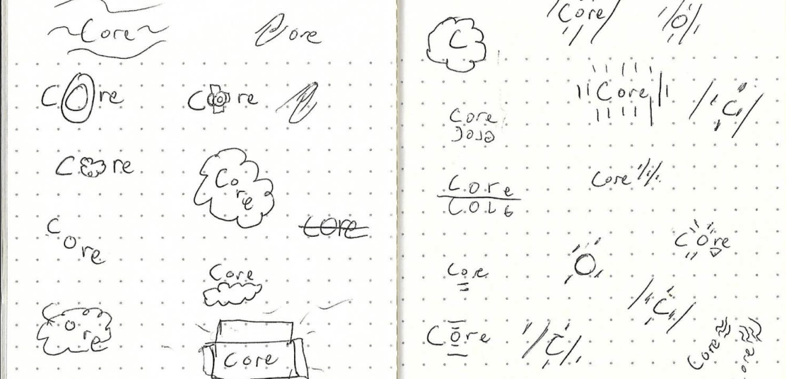
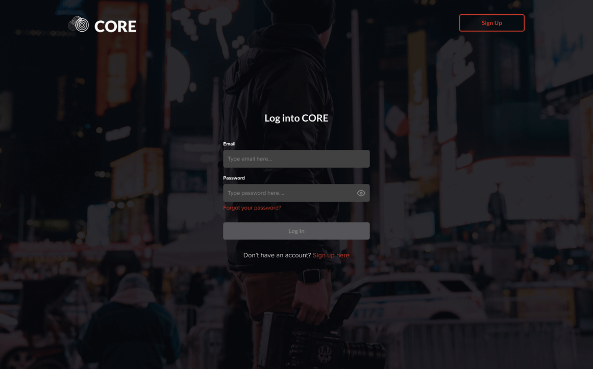

CORE Case Study

The Basics
Summary
CORE is a cloud file manager service dedicated to empowering the filmmaker. It aims to be the homebase for the filmmaker’s journey. With CORE the artist has the ability to create, store and share their filmmaking files.
What I did
- UX Research
- Visual Design
- Prototyping & Testing
- Branding & Identity Creation
Tools
- Google Surveys
- Google Docs
- Whimsical
- Figma
- Zoom
- Usability Hub
Duration
- 5 weeks
Deliverables
- User Survey
- Competitive Analysis
- User Personas
- User Stories
- User flows
- Content Strategy
- Wireframes (low and high fi)
- Usability Testing
- Style Guide
- Preference Testing
- Prototyping
Problem
In the beginning of the project I was given a brief by a hypothetical client. In this brief the client laid out a desire to create a new player in the cloud service industry. They outlined features that they wanted the application to include. However the problem was with an over saturated market was there enough room for a new competitor in the space? If so, what would that look like? Did users even want or need the features the client listed?
Solution
Through the UX process I found out that there was room for a new cloud service as long as it was for a specific niche. That’s how CORE became a filmmaking platform.
Also through my research I found out the key features users needed to create a minimal viable product. These key features were creating an account, logging into an account, creating a file, uploading a file and sharing a file. Through the design I made sure to highlight these features.

Discovery and Research
User Survey
Using Google surveys I was able to collect data on a number of respondents.
- Creating content, uploading a file and sharing a file were the top 3 most used and valued features.
- 68.8% of cloud service users mainly used their application on their desktop web browser.
- 58.8% of users wanted a cloud service for a specific niche.
- 93.8% of users used their cloud service for school.
- 62.5% of users used their cloud service for work.
Competitive Analysis

Using Google docs, I did a competitive analysis on three major cloud services - Google Drive, Evernote and Pinterst. Through the analysis I found that these services made it really easy to do their main story. In Google Drive and Evernote, you can easily make content. Pinterest can easily save content.
However I found that google drive’s content is very general so users of a specific niche would be out of luck if they needed to create a specific niche type file. Evernote can only create one type of file - notes. In addition Evernote can’t upload files (You can only attach a file to a note). Then with pinterest, they don’t even give users the ability to create any type of content.
User Personas
Considering that the data said that users wanted a niche for a cloud service this was the point where I selected film as the market to tackle.
In an effort to put all the data I collected together and to humanize the potential customers I created user personas.
Emma Collins

- Age: 20
- Occupation: Student
- Location: North Carolina, USA
- Gender: Female
- Status: Single
- Role: Up and coming film student
Goals
- Upload files
- Share files
- Collaborate on files in real time
Frustrations
- No ability to create film specific files
- Can’t password protect files
- Slow upload times
- Lack of storage
Xavier Dillard

- Age: 32
- Occupation: Assistant Director
- Location: New York, USA
- Gender:Male
- Status:Single
- Role:Type A assistant director
Goals
- Create documents and spreadsheets
- Organize files into groups
- Sync files between platforms
Frustrations
- No ability to color code files
- No ability to change display
- Can’t preview files.
A lot of the information provided in the user personas were based on data collected on the survey. The demographic questions informed the occupations, age, gender, relationship status of Emma and Xavier. However, one thing to note is that Xavier was originally a production manager. It wasn’t till I got deeper into the project that I had to come back and change Xavier to an assistant director. I didn’t realize that assistant directors, not producers had more of the day-to-day administrative tasks that I was thinking about.
As for the goals and frustrations, while some of these didn’t become the MVPs of the project, they were based on frustrations and features respondents said they wished they had.

Information Architecture
User Stories
In order to create the user stories I jumped into the mind of each user persona and I thought about the things they needed to do their job. While both had different prioritization levels for each task I eventually came to the conclusion that both groups needed to...
- Create an account
- Log into an account
- Create a document
- Share a file
- Upload a file
Something to note is that I originally had locking a file and color coding a file as part of the MVPs instead of creating/logging into an account. It wasn’t till I got to wireframing where I realized that those were task users needed! I think that I was so focused on the data and the users' wants/frustrations that I didn’t consider the obvious. So I had to go back to add these two tasks in the user stories and user flows.
User flows

I created a number of user flows based on the user stories I came up with. For speed purposes, I first started with pencil and paper. Then I transferred it digitally to whimsical when I found ones that worked.
I focused on the main user stories (at first it was to create a document, share a file, upload a file, color code a file, lock a file. Creating and logging into an account was added later.) I also decided in order to not fall victim to scope creep, I would only add additional user flows that were closely aligned with the main stories.
With a lot of user stories taking place on the dashboard, I wanted to focus on flexibility. Something like creating a document for example, was a task that was completed in multiple ways by multiple users. I wanted to cater to those uses.
Sketching

I did multiple sketches of the different screens. I used the crazy 8 method to force me to think outside the box. Then after that I redesigned some of the sketches I liked till I came up with ones that I felt highlighted the high priority task.
Digital wireframes
Using Figma I turned my sketches into digital wireframes. Through the process I started to think of more specific ways to highlight the MVPs.
On the Homepage I highlighted the create an account story by making it the biggest element on the page. In addition I placed it along the z-pattern that users' eyes take. When first landing upon the page.
On the dashboard I highlighted the upload and create a file stories by making their buttons circular while the rest of the elements on the page became geometric. In addition I created space around the buttons to increase the contrast.
First Usability Testing
I did a usability test on two users. One of the tests was in person and the other was done remotely through Zoom. I tested them on 5 tasks. (Looking back at it I should have tested on just the high priority task but I made the mistake of focusing on the users frustrations instead of the MVPS.)
- Create an account
- Create a document
- Create a project
- Locking a file
- Sharing a file
Discovery #1

The login process was not as seamless as I thought. Users had a hard time identifying if they put anything into the input fields. This caused delays and hesitation and confusion.
Discovery #2
The create menu was a little confusing to users. They were getting lost. Especially when the sub menu popped up.
Discovery #3
Users were confused by the share icon. This caused them to pause and think through the process. It was like I could see their mind trying to do the process of elimination.
Branding
Discovering a Name
After going through a few names I came up with the name CORE for this cloud service. I had the idea that this was going to be the filmmakers homebase. This was going to be the CORE of their film project.
Creating an Identity
When doing research for other cloud services I found that they had a very 9-5 feeling. They felt very corporate.
“Every artist has a small revolution inside of them.”
I wanted CORE to feel like it was for those indie filmmakers. I wanted it to be rebellious, individualistic, modern, artistic. I really wanted it to be an alternative brand to the Google Drives and the Evernotes.
Finding an Image
Part of this project was creating a visual identity for CORE. I had to come up with a logo that went with the identity I imagined. The logo went through many iterations. It started with sketching.
When I found a few that felt right I transferred it to Figma and started iterating.

Eventually I settled on this design and it was a long way from where I started.
The circles give CORE a sleek look while also forming a cloud. Each circle has smaller circles inside them till they reach their CORE. This highlights the idea that CORE is the home for the filmmaker. I also gave a gradient to the cloud to give it a modern feeling. On top of that the gradient serves another purpose of giving the effect of the circles coming out of the background. That is supposed to represent the artist breaking away from the crowd.
Style Guide

I created a style guide for the visual identity for CORE. Through this I go over the various elements in detail.
Color Palette
Black
The shade of black was selected because it was mysterious, elegant, sleek but it also served as an alternative to all the light UI’s in other cloud services
Red
Red was selected because it was bold, courageous, passionate. It represented love and energy. This felt perfect for the artist.
Font
San serif fonts were selected to give the platform a modern feel while also being very legible.
Visual Design
First iteration

After going through a few names I came up with the name CORE for this cloud service. I had the idea that this was going to be the filmmakers homebase. This was going to be the CORE of their film project.
Fix #1


In order to fix the login process I change the color of the input fields whenever the user has put in information. In addition I changed the example text. At first I thought it would bring a bit of character to the project but I didn’t realize that it was confusing the users.
Fix #2
A major change that I had from transitioning from the middle fidelity wireframes to the high fidelity mockups is the shapes of the elements. When color was added all the elements felt too loud and were shouting for attention. As a result, I changed most of the elements on the dashboard to have softer, rounded edges. This caused me (in order to keep the contrast) to change the buttons to be more geometric.
Another reason I wanted to change the shapes had to do with branding. It felt counterproductive to the brand to have circular buttons. One of the reasons for having a dark UI is that it’s a bit edgy and different. Having circular buttons felt contradictory to that image.
Fix #3

I put in hover states on the create menu in order for users not to get lost.
Fix #4
I replaced the share icon to something a user said would be more recognizable - a link icon.
Preference Test and Second Iteration

Using usability hub I tested users on 3 different elements.
- Different hero images.
- Different signup/button copy.
- Different ways to style the file container in the dashboard.
Through this process I found out that respondents reinforced all my original choices except for the hero image.
Final Iteration
Second Usability Test
At this stage of the project I finally had a good grasp on all the high priority tasks and the full scope of this project. During this 2nd usability test I not only wanted to test if the visual identity matched up with the brand but I also wanted to test those high priority tasks.
I tested users remotely using zoom. I tested them on 5 tasks
- Creating an account
- Logging into an account
- Creating a document
- Uploading a file
- Sharing a file
Issue and solution #1
The task seemed pretty quick with the users. However there was still hesitancy when sharing a file. It was faster than before but users still had trouble identifying the share icon right away. So I replaced the link icon to an envelope icon to attempt to fix this issue.
Issue and solution #2

From the homepage, users couldn’t tell what service CORE provided. They especially got confused from reading the copy. I originally thought it was obvious what we did. However to combat this issue I replaced the copy in the 3rd iteration to something that fully detailed what CORE did.
Issue and solution #3
I was given the comment that the login page was too dark. There was nothing distinguishable about it. They said there was nothing here that made them think of CORE. At first I thought this would give a sense of mystery and minimalism but instead it made it dull. To combat this I added a background image which now I feel speaks CORE’s brand.
Issue and solution #4

Another comment I was given was that CORE’s dashboard felt a little dull. That nothing jumped off the page. I agreed but didn’t realize it was so obvious. There wasn’t enough budget to add custom icons and fonts which I think would have really made it stand out. But I did add a gradient on the nav bar which I feel made a huge difference. It helped it pop while also highlighting the high priority stories even more.

Reflection
Closing thoughts
Going into this project I had doubts about there being enough room for another player in the cloud service. But through my research I found out that there was. In order for a new cloud service to exist they would have to be dedicated to a specific niche.
Also through various degrees of testing I found out that this product works. In the final usability test, users seem to go through the high priority task seamlessly.
What actually surprised me was how much small tweaks changed the complexion of the project. By doing two small things - adding a picture in the background of the login page and adding a gradient to the navbar of the dashboard - the project came alive!
If I was given more time I would have loved to have tried to add dedicated and custom fonts and icons. I feel like it would give the project an even more individualistic look. In addition I would have loved to have created another user survey asking filmmakers specifically about a need for a product like this. I would have also liked to have an additional usability test to see if the envelope icon increased recognizability for sharing.
This project taught me a lot. It taught me that the UX process is fluid. You don’t just finish one deliverable and go to the next. Yes, the last deliverable will inform the next. But the next will also inform the last. It’s ever changing. They all inform each other.
Also I learned that a project is never finished. Even though there are changes that I wish I could have made I’m still proud of this project and I could walk away confident that this is a suitable solution to the client’s brief.